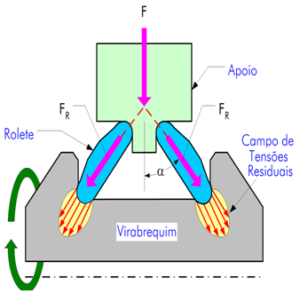
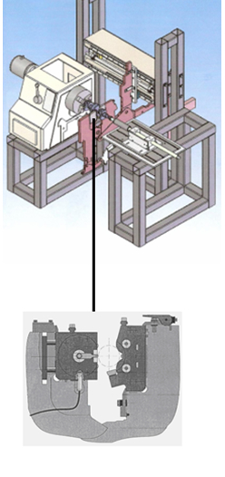

Prof. Dr.- Ing. Walter L. Weingaertner
Prof. Dr. Eng. Rolf Bertrand Schroeter
LMP - Laboratório de Mecânica de Precisão
Universidade Federal de Santa Catarina
Departamento de Engenharia Mecânica
Caixa Postal 476 - EMC
88010-970
Florianópolis - SC - Brasil
Tel. : +55 (48) 3721-9395
URL : http://www.lmp.ufsc.br
Contato:
Prof. Dr. Ing. Walter L. Weingaertner
E-mail : wlw@lmp.ufsc.br
Eng. Eduardo F. Maran Bueno
E-mail: eduardomaran@yahoo.com.br
|
|
INTRODUÇÃO
O processo de fabricação de virabrequins é composto de várias etapas responsáveis por conferir a sua geometria final. Basicamente, a concepção final desta peça é alcançada através de processos de usinagem. Entretanto, outros processos, que não realizam necessariamente a retirada de material, também são utilizados. Dentre esses processos está o Roleteamento Profundo, do inglês Deep Rolling.
O Roleteamento Profundo é um processo de conformação mecânica que objetiva introduzir tensões residuais compressivas, em camadas próximas à superfície de componentes mecânicos, através de roletes. Com isso, tem-se um aumento da resistência mecânica em função do estado de encruamento.
Através do processo de roleteamento é possível reduzir consideravelmente a nucleação e propagação de trincas de fadiga, oriundas de solicitações alter-nadas.

Modo de aplicação da força no processo de roleteamento de virabrequins
Especificamente para o caso de virabrequins, o processo é responsável pelo aumento da vida à fadiga desses componentes.
OBJETIVOS
- Validar o equipamento de Roleteamento Profundo em construção no LMP;
- Variar os dados de entrada do processo, como velocidade de roletagem, força de roleteamento e número de revoluções do virabrequim, para fomentar a descoberta da real influência que cada variável assume no processo.
- Determinar o ganho de vida à fadiga dos componentes submetidos ao processo, através da análise comparativa entre corpos roletados e não roletados.

PROCEDIMENTO
Os corpos-de-prova serão confec-cionados a partir do material utilizado na fabricação de virabrequins (ferro fundido) e possuirão geometria semelhante.
A roletagem será realizada sobre o raio de concordância do virabrequim, entre o munhão e o contrapeso.
Os ensaios de Fadiga serão realizados em máquina de fadiga que trabalha na frequência de ressonância do material.
Os ensaios serão realizados em corpos-de-prova roletados e não-roletados como forma de comparação dos resultados apresentados em ambos os casos.
As zonas de deformação serão analisadas através dos exames metalográficos para determinação dos pontos onde as mudanças nas propriedades do material são mais acentuadas. |